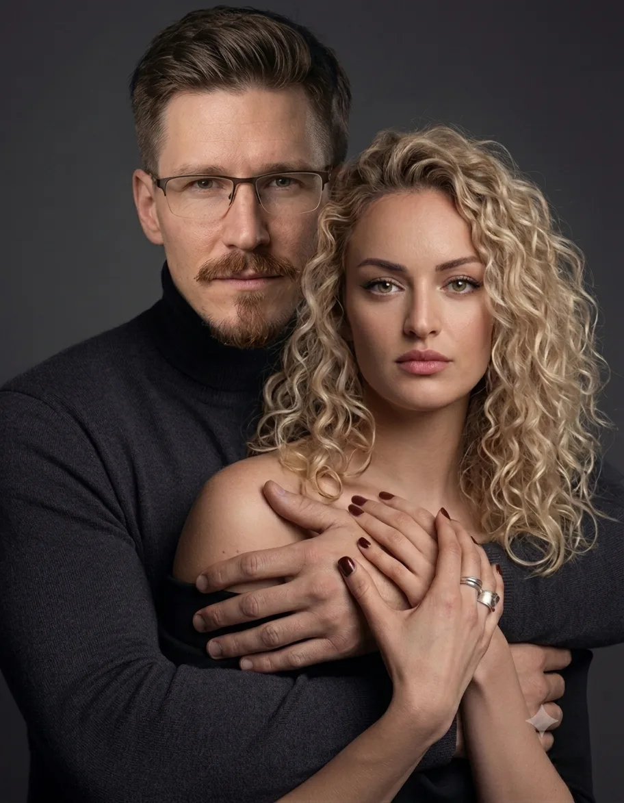
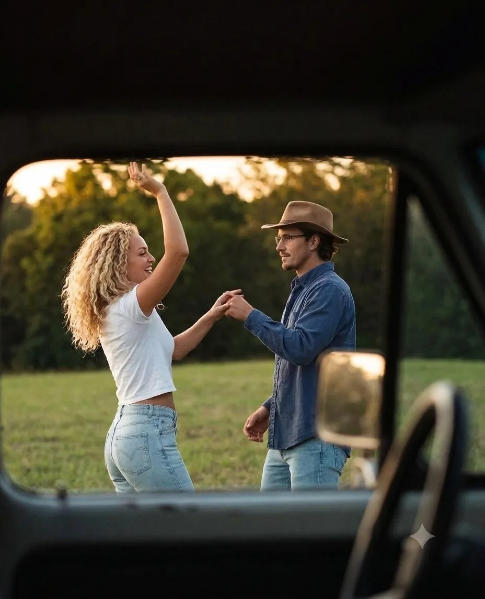
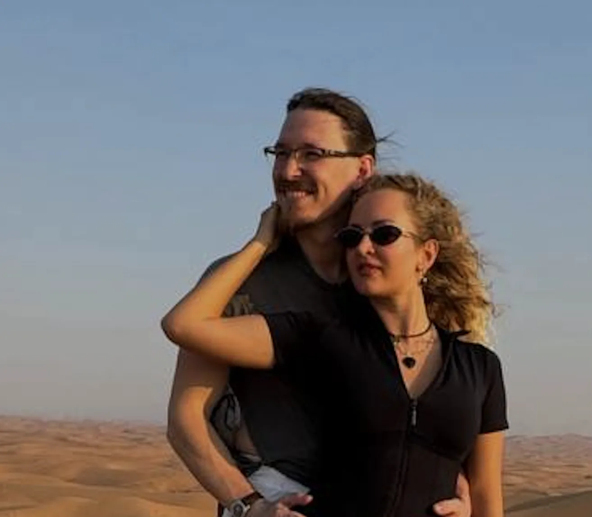
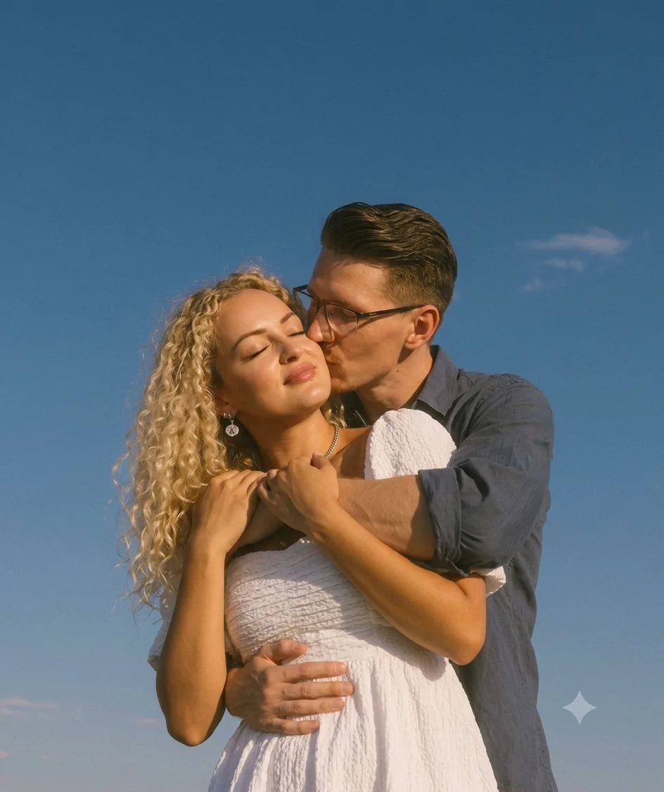
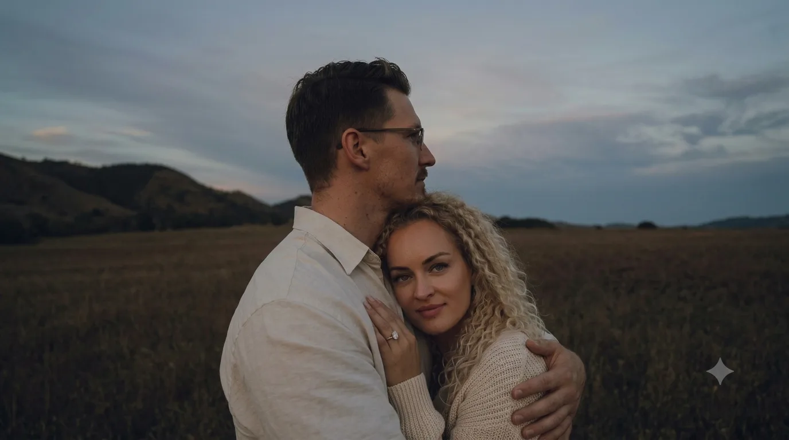

Слышать. Любить.
Раскрывать жизнь вдвоём.
Мы — пара. И пара — наш главный инструмент. Методом guided imagery мы помогаем мужчинам и женщинам вернуться к живому состоянию, настроиться друг на друга и проживать путь и опыт — вместе.
Состояние — исток всего
Отношения не строятся из усилий — они раскрываются из состояния. Когда мужчина устойчив в своём мужском, а женщина наполнена в своём женском, между ними возникает сонастройка: способность слышать, чувствовать и любить без борьбы и доказательств.
Мы работаем именно с этим — с тонкой настройкой внутреннего состояния через направляемое воображение. Не с техниками «как правильно», а с живым источником, из которого рождаются близость, ясность и сила. Мы делаем это вдвоём — потому что настройку пары может передать только пара.
Guided imagery — направляемое воображение
В основе всей нашей работы — guided imagery (направляемая образная работа): метод психологической работы, признанный в научном сообществе и десятилетиями применяемый в психотерапии, спорте высоких достижений и медицине.
Через направляемое воображение мы обращаемся к глубинным слоям психики — туда, где живут состояния, образы мужского и женского, сценарии отношений. То, что увидено и прожито в образе, меняет состояние — а состояние меняет жизнь.
Внутри метода мы используем практики и теории различных школ, работающих с сознанием, — от классической психологии и юнгианской традиции до телесных и созерцательных подходов.
Научная основа. Метод изучается и применяется в клинической психологии и психотерапии по всему миру.
Работа с состоянием. Образ — прямой язык глубинной психики: он минует спор ума и меняет само состояние.
Синтез школ. Мы соединяем инструменты разных традиций работы с сознанием в единую живую практику.
Бережность. Процесс ведётся мягко: вы всегда в контакте с собой и с ведущим.
Наша жизнь — наша практика





Двое — и один путь

Анатолий Осокин
Проводник мужского состояния. Работает с опорой, волей, направлением и тихой внутренней силой — тем, из чего мужчина берёт на себя жизнь и женщину рядом.
- Более 7 лет личной практики работы с состоянием и телом
- Практик направленной визуализации: индивидуальная работа с мужчинами
- Обучение у мастеров Дао и в академии PSY PRO с 2023 года
- 14 лет в управлении в IT-бизнесе

Ольга Забаштан
Проводник женской ценности, наполненности и целостности через работу с архетипами Анимуса и Анимы — женщина расцветает и вдохновляет жизнью всё вокруг.
- Психолог, телесник, тренер по фитнесу и бодибилдингу
- Эксперт по системному развитию личности и здоровьесбережению
- Более 9 лет оздоровительной, телесной, психологической и духовной практики с женщинами по всему миру
- Организатор мероприятий (рекорды России и мира по гвоздестоянию, конгресс специалистов БРИКС и др.)
Наш совместный опыт
Главный актив — не знания и теория, а практика отношений в нашей живой паре. Всё, что мы передаём, прожито нами в отношениях: кризисы и примирения, тишина и страсть, быт и путь.
- 4 года вместе — как пара, как семья, как рабочий тандем
- Совместное ведение трансперсональных сессий
- Ретриты и выездные программы для пар
- Практика сонастройки мужчин и женщин в общем поле по авторскому методу
С чем мы работаем
Каждая практика ведётся методом направленной визуализации — через направляемые образы, в личном темпе и с опорой на ваш живой опыт.
Мужское внутри мужчины
Личная практика настройки и активации мужского состояния: опора, воля, направление, спокойная сила. Для мужчин, которые хотят стоять в жизни твёрдо — и быть живыми рядом с женщиной.
Женское внутри женщины
Личная практика раскрытия женского состояния: чувствительность, наполненность, доверие, мягкая сила. Для женщин, которые хотят жить из своей природы — а не из напряжения и контроля.
Мужское внутри женщины
Работа с внутренним мужским в женщине: ясность, границы, воля к действию — так, чтобы внутренний мужчина защищал и поддерживал её женское, а не подменял его жёсткостью.
Женское внутри мужчины
Работа с внутренним женским в мужчине: чувствование, приятие, творческий поток — так, чтобы сила мужчины стала живой и тёплой, а не броней и дистанцией.
Сонастройка пары
Работа вдвоём с парой: восстановление слышания, тепла и потока между мужчиной и женщиной. Мы держим поле вчетвером — и пара заново находит друг друга.
Группы и круги
Мужские, женские и смешанные группы: общее поле, живая передача состояния, практика сонастройки в кругу. Ретриты и выездные программы.
Ассоциация мужско-женских отношений
В рамках нашей миссии мы организуем работу ассоциации мужско-женских отношений — сообщества мастеров, исследующих и практикующих искусство отношений мужчины и женщины.
Мы проводим мероприятия для мастеров мужско-женских практик: встречи, конференции, совместные лаборатории и обмен опытом между школами.
Так идея становится делом: мы материализуем в нашем мире проявленное взаимодействие мужчины и женщины — и приглашаем в это поле тех, кто ведёт людей по этому пути.
-
ПроявленноеВзаимодействие мужчины и женщины
-
ГлубжеВстреча мужского и женского начала
-
Ещё глубжеТанец инь и ян
-
В самой глубинеТанец самого бога с собой — ничто и дао
Мы взращиваем культуру здоровых мужско-женских отношений в России — как живой ответ на кризис идей. Когда двое умеют слышать и любить друг друга, вокруг них сама собой собирается жизнь: семья, дело, будущее.
Мы верим, что обновление начинается не с лозунгов, а с пары — с самой малой и самой прочной единицы культуры. Развитие, культивация и взращивание этой идеи — дело нашей жизни.
Начать с разговора
Первый шаг — короткая встреча-знакомство. Мы услышим ваш запрос и предложим формат: личная практика, парная сессия или группа.